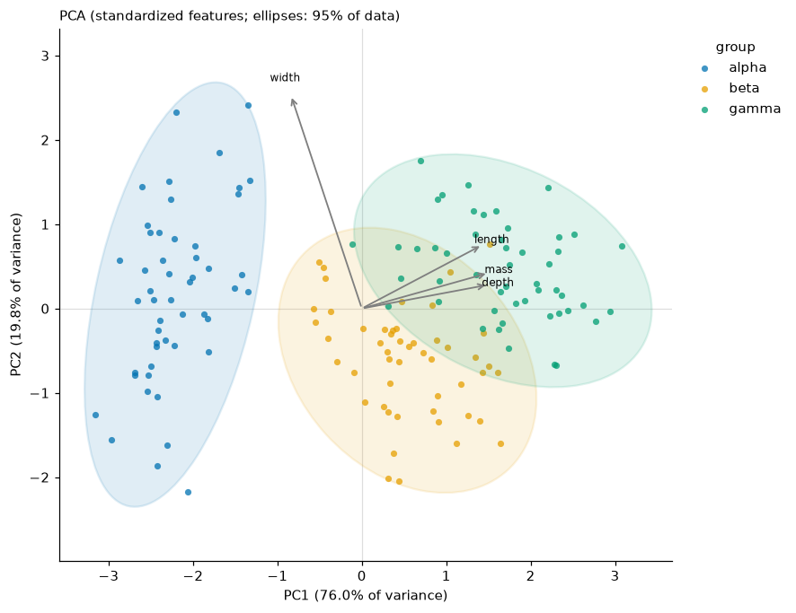
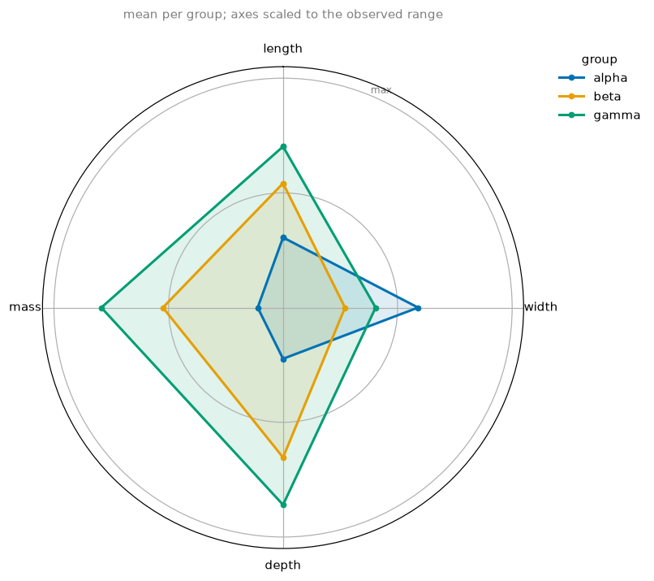
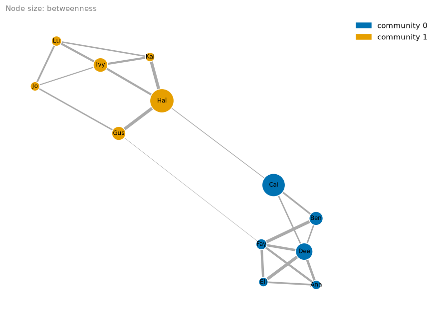

Multivariate data and networks¶
import viz_calc as vc
from viz_calc import datasets
meas = datasets.measurements()
features = ["length", "width", "depth", "mass"]
1. Principal components¶
res = vc.pca_plot(meas, features=features, group="group", loadings=True)
res.info["explained_variance_ratio"] # PC1 0.760, PC2 0.198, PC3 0.033, PC4 0.010
res.info["loadings"]

What the function does, and why:
- Standardizes features by default (
scale=True), i.e. a correlation-matrix PCA. Without it, whichever feature has the largest units dominates the first component (Jolliffe & Cadima, 2016). - Labels the axes with the variance explained. PC1 carries 76% here, PC2 20%; together the plot shows 96% of the standardized variance.
- Ellipses with a stated meaning.
ellipse="data"(default) draws the normal-theory region expected to hold 95% of each group's points: radius √χ²₂(0.95) along the eigenvectors of the group's covariance.ellipse="confidence"draws a 95% confidence region for the group mean, which is much smaller. The original script took the square root of the eigenvalues twice and used an unexplained 68% level, so its "circles" had no interpretable size. - Biplot arrows (
loadings=Trueor a number n for the top n) show how each feature projects onto the plotted components. Here width loads on PC2 (0.94) while length, depth and mass load on PC1. - Reproducible signs. Each component's sign is fixed so its largest loading is positive; SVD would otherwise flip signs arbitrarily between runs or library versions.
Use vc.pca(meas, features) to get scores, loadings and eigenvalues
without a plot.
2. Radar profiles¶

Groups are summarized first (mean by default). Axes are rescaled so 0 is
the smallest and 1 the largest observed value of each metric, so the
group profiles sit inside the range of the data. normalize="groups"
stretches each axis between the lowest and highest group instead, which
exaggerates differences and always puts one group at the centre.
Read radar charts for shape (alpha is wide but small; gamma is large except in width). Do not compare enclosed areas, which change when you reorder the axes.
3. Networks¶
edges = datasets.network() # source, target, strength
res = vc.network_map(edges, source="source", target="target", weight="strength", size_by="betweenness")
res.table.sort_values("betweenness", ascending=False).head(3)

| node | degree | strength | betweenness | community |
|---|---|---|---|---|
| Hal | 4 | 26 | 0.60 | 1 |
| Cai | 3 | 11 | 0.55 | 0 |
| Dee | 5 | 31 | 0.25 | 0 |
- Communities come from the Louvain method (Blondel et al., 2008) via NetworkX's built-in implementation, seeded for reproducibility. The two friend groups are recovered.
- Betweenness treats a strong tie as a short distance (1/weight), so brokers between groups score highest. Two edges link the communities; Hal and Cai sit at the ends of the stronger one, so shortest paths run through them.
interactive=Truereturns a Plotly figure with hover details (pip install "viz_calc[interactive]").
4. Flows¶
sankey takes one row per flow (repeated source–target rows are summed; a
row with no source, target or amount raises an error rather than being
dropped from the totals) and returns a Plotly figure (pip install "viz_calc[interactive]"):
import pandas as pd
flows = pd.DataFrame({
"from": ["Search", "Search", "Email", "Email", "Landing page", "Landing page", "Pricing", "Pricing"],
"to": ["Landing page", "Pricing", "Landing page", "Pricing", "Sign-up", "Left", "Sign-up", "Left"],
"amount": [500, 200, 300, 100, 350, 450, 120, 180],
})
res = vc.sankey(flows, source="from", target="to", value="amount")
res.table # each node's total inflow and outflow
| node | inflow | outflow |
|---|---|---|
| Search | 0 | 700 |
| 0 | 400 | |
| Landing page | 800 | 800 |
| Pricing | 300 | 300 |
| Sign-up | 470 | 0 |
| Left | 630 | 0 |